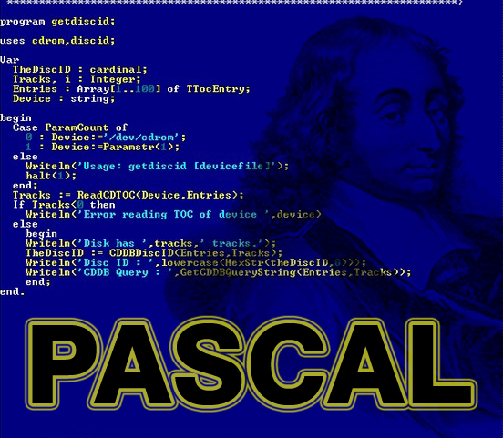
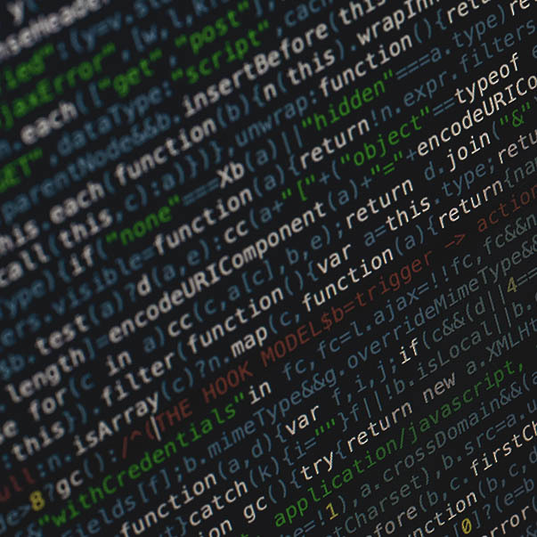

É uma linguagem de programação idealizada em 1971 por Niklaus Wirth, professor da faculdade
Politécnica de Zurique, na Suíça, que assim foi batizada em homenagem ao grande matemático Blaise Pascal.
O objetivo era desenvolver uma linguagem de programação disciplinada para ensinar programação estruturada.
No fundo, trata-se de uma versão simplificada para propósitos educacionais da linguagem Algol, que data de 1960.
⠀⠀⠀⠀⠀⠀⠀⠀⠀⠀⠀⠀⠀Para que é Ultilizado?

A utilização da linguagem Pascal, para a resolução de um problema, faz-se através de diversas fases:
• Definição do problema - descrição e delimitação adequada do problema a ser resolvido
• Desenvolvimento de um algoritmo - descrição das diversas operações a serem realizadas no computador para resolver o problema
• Transcrição do algoritmo para PASCAL, obtendo-se um programa equivalente de acordo com as regras e recursos oferecidos pela linguagem
• Digitação do programa
• Transcrição do algoritmo para PASCAL, obtendo-se um programa equivalente de acordo com as regras e recursos oferecidos pela linguagem